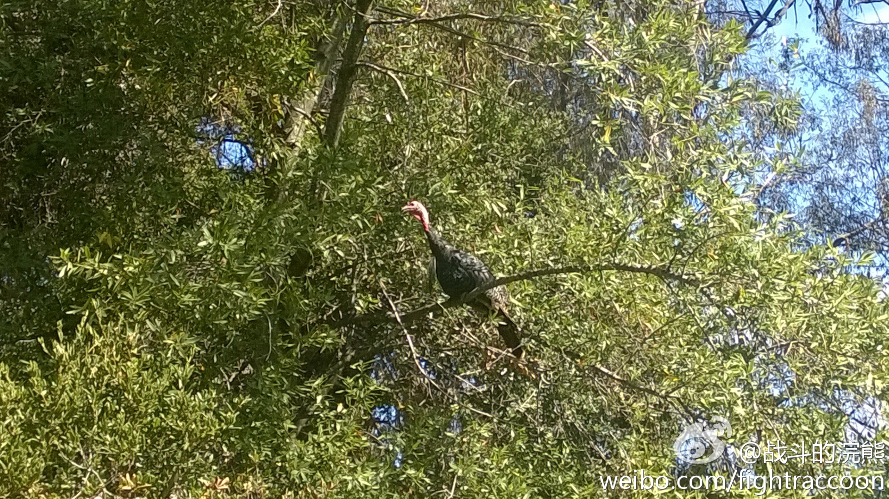
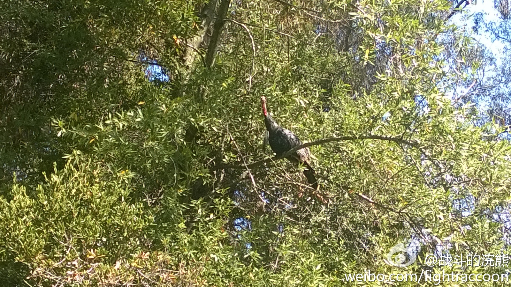
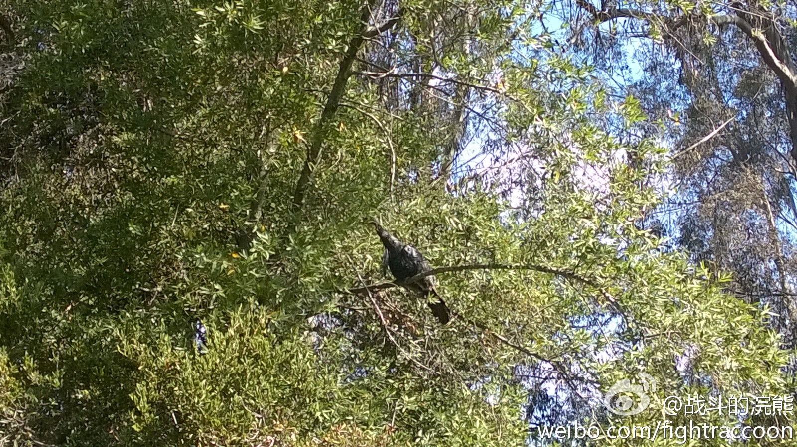

风什么时候停啊？ //@战斗的浣熊:最近看一本书的时候才发现，这个在国内广为流传的“风口上猪也会飞”的说法也不是雷布斯的原创，而是在美国投资圈里已经有的说法。而英文里原本的说法就是 In A Strong Wind Even Turkeys Can Fly ,也就是风口上火鸡也能飞 网页链接@战斗的浣熊:据说中国互联网行业里常说在风口上，猪也会飞; 这个我不信，但说火鸡会飞上树，我信了，因为在家后院看到了... 